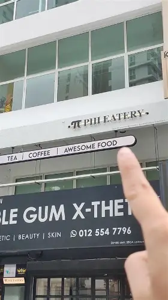
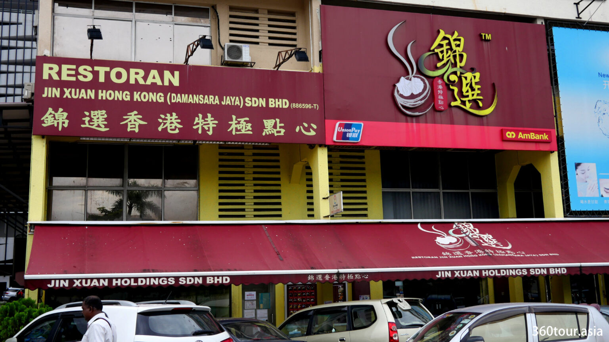
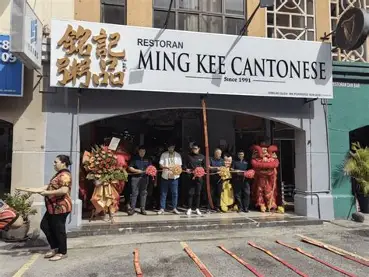
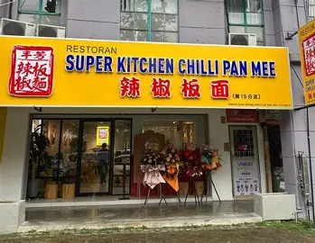
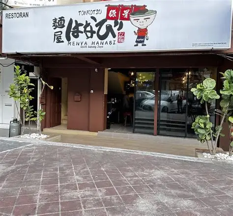
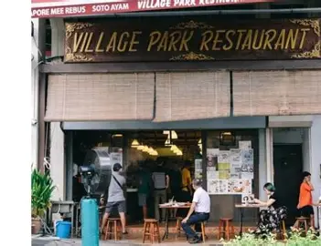

Our Restaurants
Explore our carefully selected dining spots across the Klang Valley. Find your next favorite meal and secure your table today.

PIII Eatery
Located in the bustling heart of Damansara Uptown, PIII Eatery offers a cozy, modern ambiance perfect for casual dates and catch-ups. We specialize in fusion Western pasta and hearty rice bowls, crafted with fresh ingredients and bold flavors to provide a comforting yet exciting dining experience for every guest.
Area: Damansara Uptown
Cuisine: Western pasta & rice bowls
Signature Dishes: Spaghetti Carbonara (RM 25.00), Kam Heong Spicy Chicken Rice (RM 22.00)
Price per person: RM 40 - RM 50
Deposit: RM 20
Reserve a table
Restoran Jin Xuan Hong Kong
A staple for dim sum lovers, Restoran Jin Xuan Hong Kong in Damansara Uptown brings authentic flavors and a lively morning atmosphere straight to your table. Whether you are bringing the whole family or catching up with friends, our freshly steamed baskets and traditional baked goods offer a comforting, mouth-watering experience.
Area: Damansara Uptown
Cuisine: Hong Kong dim sum
Signature Dishes: Har Gaw (RM 8.00), BBQ Pork Bun (RM 7.50)
Price per person: RM 30 - RM 40
Deposit: RM 15
Reserve a table
Ming Kee Cantonese
Famous for its beautifully caramelized and tender roast meats, Ming Kee Cantonese is a must-visit destination for traditional Cantonese cuisine. Perfect for family dinners and business lunches, this establishment prides itself on decades of roasting mastery. Experience the perfect balance of crispy skin and juicy, flavorful meat that has made us a beloved landmark.
Area: Damansara Uptown
Cuisine: Cantonese roast meats
Signature Dishes: Roast Duck (RM 45.00), Char Siew (RM 20.00)
Price per person: RM 50 - RM 70
Deposit: RM 30
Reserve a table
Super Kitchen Chilli Pan Mee
Craving a spicy kick? Super Kitchen Chilli Pan Mee in Subang Jaya serves up the ultimate comfort food for students and locals alike. Our signature noodles are topped with crispy anchovies, minced pork, a perfectly poached egg, and our famous dry chilli flakes. It is a casual, fast-paced eatery where bold, fiery flavors take center stage.
Area: SS15, Subang Jaya
Cuisine: Chilli pan mee
Signature Dishes: Chilli Pan Mee (RM 12.00)
Price per person: RM 15 - RM 25
Deposit: None
Reserve a table
Menya Hanabi
Originating from Nagoya, Japan, Menya Hanabi is the undisputed pioneer of Mazesoba (soupless ramen). Located in Damansara Utama, we offer a deeply savory, umami-packed bowl loaded with spicy minced meat, seaweed, and a raw egg yolk. Mix it all together for a rich, thick coating on our chewy noodles. A fantastic spot for exciting noodle dates.
Area: Damansara Utama
Cuisine: Japanese ramen
Signature Dishes: Nagoya Mazesoba (RM 28.00)
Price per person: RM 35 - RM 45
Deposit: RM 10
Reserve a table
Village Park Restaurant
Consistently hailed as serving the best Nasi Lemak in town, Village Park Restaurant is an iconic Malaysian institution in Damansara Uptown. Renowned for our fragrant coconut rice and incredibly crispy, spiced fried chicken, we offer a truly authentic local dining experience. It is the perfect, bustling spot to enjoy a quintessential Malaysian meal.
Area: Damansara Uptown
Cuisine: Malaysian (nasi lemak)
Signature Dishes: Nasi Lemak Ayam Goreng (RM 12.30)
Price per person: RM 15 - RM 30
Deposit: RM 10
Reserve a table